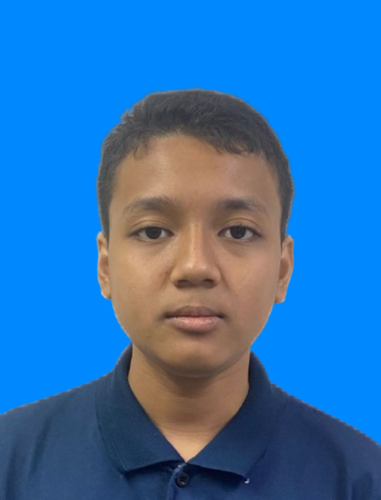

Hi! My name is Alif Irfan Bin Mat Redzuan. I am a student of Science Computer at Universiti Teknologi Malaysia. After graduating, I'm targeting to become a software engineer. my love for coding start when i was 12 years old when i found this website called scratch. Since then I have done my own personal project and join competition to learn more and widen my experience in programming
My hobby is playing video game. some of my favorite game is shapez and mindustry. these two games is a factory game. What I like about it is it challenge my mind to find a the most efficient design for maximum output.
This website is for individual project for subject Web Programming.